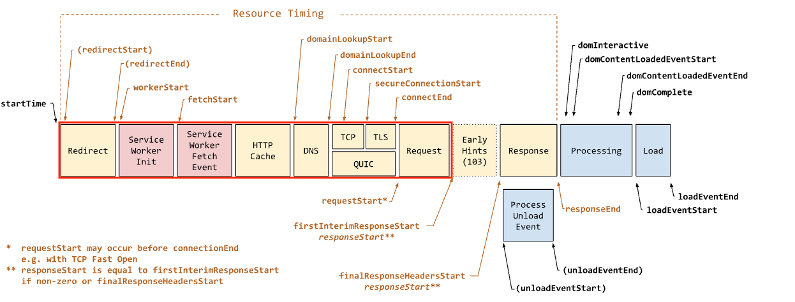

| Host | Client | Websites | Fast | Average | Slow |
|---|
See a missing hosting provider? Please help us identify how to surface them here.
This report is powered by Chrome User Experience Report, which provides user experience metrics for how real-world Chrome users experience popular destinations on the web. As a result, this report does not rely on synthentic tests of each hosting provider, but instead provides insight into how real-world users experience the speed of sites hosted by various providers.
TTFB is measured as the time from the start of navigation request until the time that the client receives the first byte of the response from the server. It includes network setup time (SSL, DNS, TCP) as well as server-side processing.

As you can see in the Navigation Timing Level 2 draft spec
screenshot above, the metric is equivalent to performance.getEntriesByType('navigation')[0].responseStart.
The thresholds for fast/average/slow TTFB are 200 ms as the upper limit for fast TTFB and 1000 ms as the lower limit for slow TTFB.
Chrome UX Report provides other metrics like First Paint, First Contentful Paint, First Input Delay, and others. We plan to add more metrics to this report in the future. If you would like to help out, please let us know on GitHub.
Chrome UX Report publishes monthly datasets and this report is updated once a month based on that data.
Chrome UX Report does not provide an explicit dimension for which hosting provider is associated with each origin. To perform the classification we rely on another dataset: HTTP Archive crawls all of the origins provided in CrUX and runs logic to identify providers based on header signatures, DNS records, and other signals.
For example, a response header of X-Powered-By: HubSpot for a website's HTML page indicates that
it is hosted by HubSpot.
Would you like to see a hosting provider included in this report that’s currently not on the list? Please read more about our methodology and join us on GitHub — we’d appreciate your help to allow us to expand coverage of this report!
Good question! Please start a discussion on GitHub, so we can answer it.